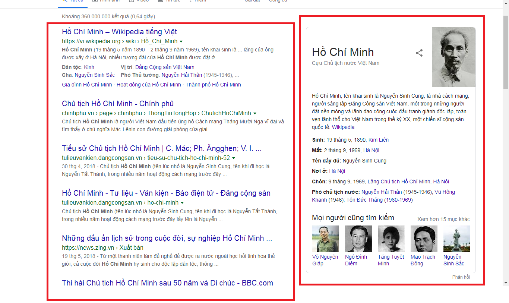

MỘT SỐ KHÁI NIỆM
MỤC LỤC
Tính khả thi trong lời tuyên bố của Google
"Things, not strings" và Knowledge Graph
1. Tính khả thi trong lời tuyên bố của Google
Google khẳng định công cụ tìm kiếm của họ không phải tìm chuỗi văn bản mà là
tìm những thứ mà người dùng cần tìm. Trên lập trường là những người có hiểu biết chút
ít về công nghệ, ta có thể thấy điều này là có cơ sở.
Đa số chúng ta trước khi tiếp xúc với Internet chắc hẳn đều đã tiếp xúc với
các công cụ soạn thảo, chẳng hạn như khi sử dụng Word, ta muốn tìm cụm từ “Thành phố Hồ Chí Minh”,
ta chỉ việc gõ cụm từ này vào hộp thoại tìm kiếm là sẽ có kết quả trả về bất kì vị trí nào có cụm từ
này xuất hiện. Với lối suy nghĩ này, Google cũng đã ứng dụng vào công cụ tìm kiếm của mình trong
những ngày đầu hoạt động. Google cho ra mắt công cụ tìm kiếm của họ lần đầu vào năm 1998, khi ấy
người dùng tìm kiếm thông tin trên google đều sẽ được trả về kết quả liên quan tới chuỗi và ở đây
kết quả đó chính là những địa chỉ trang web có liên quan tới thông tin đề cập trong chuỗi mà người
dùng nhập vào. Tuy nhiên khi mà dữ liệu thông tin ngày một quá lớn, Google nhận ra cách trả về kết
quả tìm kiếm đơn thuần như thế này là không hề thông minh.
Tới năm 2012, Google cho ra mắt mô hình Knowledge Graph (sơ đồ tri thức), họ đã lập tức khẳng định
kết quả tìm kiếm của mình sẽ là: “Things, not strings”. Tức là kết quả tìm kiếm xuất hiện sẽ là
những thực thể có trong thực tế mà ta đang sống gần gũi với con người hơn cùng với những gợi ý có
liên quan tới thực thể khác và tất cả được tóm gọi trong một bảng nhỏ bên phải màn hình, và dĩ
nhiên là những trang web có thông tin liên quan tới những thực thể đó vẫn sẽ được hiện thị ra
cho người dùng.
Như đã đề cập, công cụ tìm kiếm của Google lần đầu ra mắt năm 1998 và tới năm 2012 thì mô hình
Knowledge Graph mới được xuất hiện. Trong khoảng thời gian giữa hai mốc thời điểm này, Google
đã tổng hợp được rất nhiều thông tin cho mình, cộng với việc họ có tham gia lấy thông tin từ các
nguồn công cộng như Freebase, Wikipedia, Wikidata, CIA World Factbook, ... Do đó để hiện thực
hóa ý tưởng về một mô hình tìm kiếm thông minh đưa ra kết quả là một thực thể có thật trong thực
tế để thân thiện với người dùng là hoàn toàn khả thi. Trong giai đoạn mới phát triển Knowledge Graph,
các dữ liệu thực thể được Google thu thập từ trước sẽ được họ tận dụng bổ sung ngay vào. Chỉ thế thôi
là vốn số lượng các thực thể cũng đã khá lớn để phục vụ nhu cầu tìm kiếm của người dùng.
Ngoài ra, ứng dụng AI (trí tuệ nhân tạo) cũng là xu thế lớn trong nhiều lĩnh vực đời sống,
không có lý do gì mà Google lại bỏ qua AI trong con đường phát triển của mình. Nếu sử dụng AI
thì quá trình gia tăng số lượng thực thể của Knowledge Graph sẽ ngày một nhiều hơn, khi Google
lấy thông tin về một thứ gì đó mới có trên Wikipedia chẳng hạn, chỉ cần họ đưa cho AI phân tích
ngữ nghĩa thông tin của thứ đó, là nó có thể lắp ghép cho thực thể mới này một vị trí tương đối
trong mô hình Knowledge Graph, dần dần theo thời gian, tùy vào lượng truy cập hoặc sự can thiệp
từ Google mà mức độ ưu tiên cho sự xuất hiện của thực thể này sẽ tăng cao.
2. "Things, not strings" và Knowledge Graph
“Things, not strings” dịch ra tiếng Việt là “mọi thứ chứ không phải là chuỗi kí tự”. Cụm từ
này nghe có vẻ khá trừu tượng, nhưng chứa trong nó là một sự biến đổi lớn lao giữa các công cụ
tìm kiếm cũ và công cụ tìm kiếm Google mới từ năm 2012.
Trước kia, mọi công cụ tìm kiếm đưa ra kết quả là những trang web có chứa phần văn bản mà người dùng cần tìm và xếp hạng thứ tự
theo mức độ uy tín và lượng truy cập vào trang web đó. Tại thời điểm mới thành lập, không có
quá nhiều trang Web tồn tại và việc tinh chỉnh chưa phải là vấn đề. Dần theo thời gian, số
lượng Web tăng lên đòi hỏi sự tăng nguồn nhân lực cùng những yếu tố khác phát sinh. Có quá nhiều
trang Web có nội dung giống nhau, ít có sự liên kết giữa các dữ liệu làm cho kết quả chưa đạt hiệu quả
cao và nếu người dùng muốn tìm tới thứ họ thật sự đang đề cập, có khi họ sẽ cần tới khoảng bốn, năm từ khoá tìm kiếm.

Nhưng sau đó, kết quả tìm kiếm của Google đã có thêm sự đổi mới. Bắt đầu từ năm 2012, họ
đã dẫn đầu xu thế, đi trước mọi công cụ tìm kiếm khác với Google’s Knowledge Graph.Đây là một
bước đột phá mới dưới sự giúp đỡ từ AI.
Trong buổi ra mắt mô hình Knowledge Graph năm 2012, Google khẳng định:
“… we’ve been working on an intelligent model, that's in geek-speak, a ‘graph’, that
understands real-world entities and their relationships to one another: things, not strings.”
Mục đích của Google khi áp dụng sơ đồ tri thức vào công cụ tìm kiếm có thể hiểu ngắn gọn là :
Công cụ tìm kiếm sẽ trả lời câu hỏi cho người dùng bằng cách phân tích từng từ ngữ trong một chuỗi
văn bản để hiểu mỗi từ ngữ đó nghĩa là thứ gì trong thế giới thực, hơn là chỉ đơn giản phân tích chuỗi
văn bản như là chuỗi ký tự như truyền thống: “Google’s knowledge graph is called The Knowledge
Graph and the aim is to answer questions for its users by analyzing what the words in a query
actually mean, rather than simply analyzing strings of characters. So nowadays it’s about
things, not strings”.
Về bản chất, Knowledge Graph là một mạng lưới gắn các thực thể có trong thực tế như:
một ai đó, một công ty doanh nghiệp nào đó, một lễ hội sự kiện nào đó,… Jeff Bezos là ông chủ
của công ty Amazon, ông cũng là một trong các thực thể của Knowledge Graph.
Công cụ tìm kiếm Google đã học được, hiểu được thực thể trong thế giới thực và mối quan hệ giữa
chúng từ các nguồn công cộng như Freebase, Wikipedia, CIA World Factbook và từ kho dữ liệu khổng
lồ tích lũy bởi sự tìm kiếm của người dùng trước đó của mình. Và chính Knowledge Graph đã nâng
tầm tìm kiếm của Google theo ba cách chính:
Tìm đúng:
Giả sử bạn nhập từ khóa “America” vào Google, bạn có thể muốn tìm kiếm là nước Mỹ hoặc
là Châu Mỹ hoặc có thể là nhóm nhạc America. Và giờ đây, Google đã hiểu được sự khác biệt
giữa chúng và thu hẹp kết quả tìm kiếm mà bạn mong muốn. Đây chính là điều màKnowledge Graph đã
làm cho Google Search thông minh hơn, kết quả tìm kiếm phù hợp hơn với bạn vì Google hiểu được các
thực thể này và sắc thái trong ý nghĩa của chúng. Đồng thời, Google sẽ không loại bỏ hoàn toàn
cách tìm kiếm trước mà là song song đồng thời nên ta có thể thấy được kết quả tìm kiếm được chia thành
2 phần: phần bên trái là xếp hạng các trang web có chứa từ khóa truy vấn và phần bên phải là bản tóm
tắt được lấy từ sơ đồ tri thức.
Nhận bản tóm tắt tốt nhất:
Với Knowledge Graph, Google hiểu hơn về truy vấn của bạn, vì vậy Google có thể tóm tắt các nội
dung liên quan xung quanh chủ đề đó dù chúng không chứa phần văn bản giống truy vấn. Ví dụ bạn
tìm kiếm về chủ tịch Hồ Chí Minh, bạn có thể thấy được ngày sinh, ngày mất, nơi chôn cất, tên khai
sinh và cả hoạt động Cách Mạng của Bác.
Vậy làm sao mà Google biết được thông tin nào cần thiết cho người dùng? Chính Google
đã dựa vào kho dữ liệu lịch sử tìm kiếm khổng lồ của mình và nghiên cứu tổng hợp thông tin. Ví dụ về Người,
mọi người thường tìm kiếm về ngày sinh, mất của cựu chủ tịch (đa phần là học sinh tìm cho môn lịch sử),
các tên của Bác trong từng giai đoạn, lịch sử hoạt động Cách Mạng, hoặc có thể là các tác phẩm văn học
của Người.
Không những thế, Knowledge Graph còn giúp ta hiểu được mối quan hệ giữa các sự vật. Hồ chủ tịch đang
là nhân vật tìm kiếm trong Knowledge Graph nên ta có thể biết thêm được đấng sinh thành của Bác
là cụ Nguyễn Sinh Sắc, một trong những học trò tài năng nhất của Người là Đại tướng Võ Nguyên Giáp.
Vậy mối quan hệ, liên quan giữa các thực thể trong Knowledge Graph đều dựa vào thế giới thực. Và
điều mà nhân viên trong Google làm là khiến cho Google Search có thể hiểu được định nghĩa của sự vật
và mối quan hệ giữa chúng. Thế nhưng không phải là giảng giải cho nó từng chút từng chút mà chỉ cung
cấp cho nó kiến thức nên tảng, hướng dẫn cách học và tài liệu học là kho dữ liệu khổng lồ từ Internet,
kho dữ liệu của Google từ tìm kiếm của người dùng.

Sâu hơn, rộng hơn:
Điều cuối cùng và cũng là thú vị nhất đó là Knowledge Graph có thể giúp bạn tìm thấy một số
khám phá bất ngờ hoặc thậm chí là chủ đề bạn muốn tìm kiếm dựa trên một chủ đề khác nhưng giữa
chúng lại chỉ có một vài điểm chung. Ví dụ, khi tìm kiếm về Bác Hồ, ta còn có thể biết được
những con người cùng thời đại với Bác Hồ và có môi liên hệ nào đó như Nguyễn Sinh Sắc, Ngô Đình
Diệm hay Mao Trạch Đông. Nếu chỉ phụ thuộc vào việc tìm kiếm cảu người dùng thì sẽ không tối ưu hóa
hết khả năng của Google Search, do vậy Google có một đội ngũ nhân viên hùng hậu sẽ tham gia vào quá
trình cập nhật dữ liệu và có thể là can thiệp vào mức độ ưu tiên của việc hiển thị kết quả để đảm bảo hiển
thị được thông tin tốt nhất khi người dùng tìm kiếm.